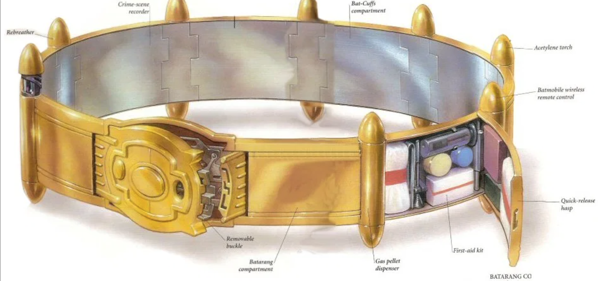

# INFO 450 Fall 2020 <div style="text-align:center;font-size: 1.5;line-height:1.8em;">Week 13</div> <div style="text-align:center;font-size: 1.5;line-height:1.8em;">Apr 27, 2021</div> --- # Agenda ## Exam will be May 11th, 7:00PM - 9:30 PM ## Synchronous required 1. Building Blocks 2. Code 3. If we have time and energy, HTTP client, server, data --- # Building Blocks We've learned a boat load of 'things' that are building blocks for programming. Syntax is the easy part. Breaking down a problem and solving it is the hard part. Programming a computer isn't a matter of just syntax, it's the combination of syntax, logic and data to accomplish a task --- # Constructs * Flow Control - if - for - while - try (?) - recursion * Data Structures - list - queue - stack - map - tuple - scalars * I/O - print - input() - files --- # More * Code Organization - functions - classes - decorators * Interaction - http - databases --- # Build a Bridge These are all of the tools in our tool belt.  --- # Using the tools in our tool belt * Project Euler - https://projecteuler.net/problem=1 Problem 1 - ``` If we list all the natural numbers below 10 that are multiples of 3 or 5, we get 3, 5, 6 and 9. The sum of these multiples is 23. Find the sum of all the multiples of 3 or 5 below 1000. ``` --- # Problem 1 - Steps to solve ``` If we list all the natural numbers below 10 that are multiples of 3 or 5, we get 3, 5, 6 and 9. The sum of these multiples is 23. Find the sum of all the multiples of 3 or 5 below 1000. ``` - \# Find all natural numbers (between 0 and 1000) - \# Check each number to see if it's divisible by 3 or 5 evenly - \# Keep track of those numbers and sum them all together --- # Problem 1 - Live code * Which building blocks will we use? * What 'varies' in the two examples (10, 1000) * What 'variables' do we need? --- # Problem 2 ``` Each new term in the Fibonacci sequence is generated by adding the previous two terms. By starting with 1 and 2, the first 10 terms will be: 1, 2, 3, 5, 8, 13, 21, 34, 55, 89, ... By considering the terms in the Fibonacci sequence whose values do not exceed four million, find the sum of the even-valued terms. ``` --- # Problem 2 - Steps to solve ``` Each new term in the Fibonacci sequence is generated by adding the previous two terms. By starting with 1 and 2, the first 10 terms will be: 1, 2, 3, 5, 8, 13, 21, 34, 55, 89, ... By considering the terms in the Fibonacci sequence whose values do not exceed four million, find the sum of the even-valued terms. ``` - \# Generate a fibonnaci sequence up to 4 million - \# Find all the even numbers - \# Sum them --- # Problem 2 - Live code * Which building blocks will we use? * What 'varies' in our operation? * What 'variables' do we need? --- # Problem 3 ``` The prime factors of 13195 are 5, 7, 13 and 29. What is the largest prime factor of the number 600851475143 ? ``` --- # Problem 3 - Steps to solve ``` The prime factors of 13195 are 5, 7, 13 and 29. What is the largest prime factor of the number 600851475143 ? ``` - \# What's a prime factor? - \# How can we find all prime factors? - \# How do we track the highest? --- # Problem 3 - Live code * Which building blocks will we use? * What 'varies' in our operation? * What 'variables' do we need? --- # Problem 4 ``` A palindromic number reads the same both ways. The largest palindrome made from the product of two 2-digit numbers is 9009 = 91 × 99. Find the largest palindrome made from the product of two 3-digit numbers. ``` --- # Problem 4 - Steps to solve ``` A palindromic number reads the same both ways. The largest palindrome made from the product of two 2-digit numbers is 9009 = 91 × 99. Find the largest palindrome made from the product of two 3-digit numbers. ``` - \# Find our bounds (three digit number) - \# Find palindromes (What's a palindrome?) - \# Keep track of the largest --- # Problem 4 - Live code * Which building blocks will we use? * What 'varies' in our operation? * What 'variables' do we need? --- # Continue through question 11? Question 11 is hard. --- # Q & A --- # Homework Redo your spiral homework BUT, instead of '1' being the middle number, it can be 'anything' ```python def spiralize(n=1): ``` is your new function signature. Framework will be put on github by noon tomorrow Due next Monday, May 3rd, 2021 by 11:59:59 LAST HOMEWORK OF THE SEMESTER ---